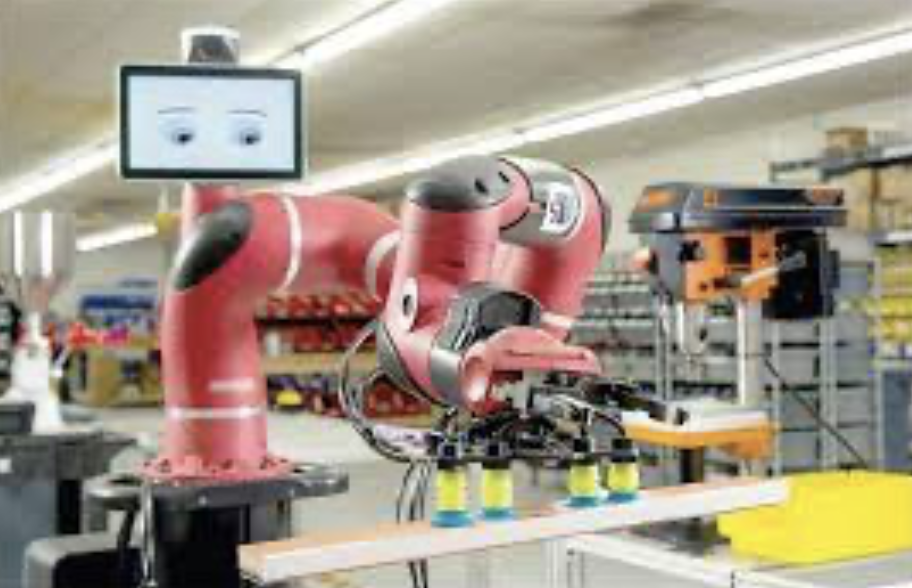

Continued automation of manufacturing: Cobots, AMVs, etc
Labor shortages combined with robotic and automation capabilities will limit the need for “unskilled” workers. Technology will revolutionize even small manufacturing businesses from parts delivery, to machine tending, to packaging and shipping.
There will be solutions for “micro shops” that can change your tires without touch labor.
There will be autonomous vehicles speeding up port operations and container movements.
There will be robots stocking shelves while we shop (for those that still want to go to a store).
Credit: gao.gov
This line will quickly blur with the human augmentation capabilities.